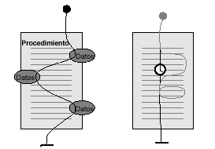
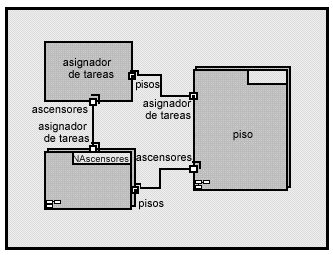
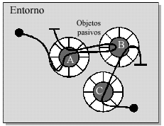
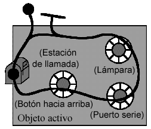
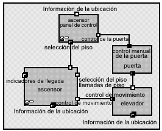

| Concepto: Concurrencia |
 |
|
| Elementos relacionados |
|---|
¿Que es concurrencia?Concurrencia es la tendencia de las cosas a producirse al mismo tiempo en un sistema. La concurrencia es un fenómeno natural, por supuesto. En el mundo real, en un momento dado, suceden muchas cosas de forma simultánea. Cuando se diseña software para supervisar y controlar los sistemas del mundo real, hay que enfrentarse a esta concurrencia natural. En lo que se refiere a temas de concurrencia en sistemas de software, hay dos aspectos importantes en general: poder detectar y responder a los sucesos externos que se producen en un orden aleatorio y garantizar que estos sucesos se responden en un intervalo requerido mínimo. Si cada actividad concurrente evolucionase de manera independiente, de forma totalmente paralela, esto sería relativamente sencillo: podríamos limitarnos a crear programas separados para gestionar cada actividad. Los retos de diseñar sistemas concurrentes derivan principalmente de las interacciones que se producen entre actividades concurrentes. Cuando las actividades concurrentes interactúan, es necesario algún tipo de coordinación.
Figura 1: Ejemplo de concurrencia en funcionamiento: las actividades paralelas que no interactúan tienen asuntos de concurrencia simples. La concurrencia se hace más compleja cuando las actividades paralelas interactúan o comparten los mismos recursos. El tráfico de coches ofrece una analogía útil. Las corrientes de tráfico paralelas en vías diferentes que tienen poca interacción provocan pocos problemas. Las corrientes paralelas en carriles colindantes requieren cierta coordinación para que la interacción sea segura, pero se produce un tipo de interacción mucho más rigurosa en las intersecciones, donde es necesaria una coordinación meticulosa. ¿Por qué nos interesa la concurrencia?Algunas de las fuerzas conductoras de la concurrencia son externas. Es decir, que las imponen las demandas del entorno. En los sistemas del mundo real, se producen muchas cosas de manera simultánea que el software debe tratar "en tiempo real". Para ello, muchos sistemas de software en tiempo real deben ser "reactivos". Deben responder a sucesos generados externamente que pueden producirse en momentos un tanto aleatorios, en un orden algo aleatorio, o ambas cosas. El diseño de un programa de procedimiento convencional para manejar estas situaciones es extremadamente complejo; puede ser mucho más sencillo particionar el sistema en elementos de software concurrentes para manejar cada uno de estos sucesos. La frase clave es "puede ser", ya que la complejidad también se ve afectada por el grado de interacción entre los sucesos. La concurrencia también puede deberse a motivos internos [LEA97]. La realización de tareas en paralelo puede aumentar sustancialmente la velocidad del trabajo informático de un sistema si hay varias CPU disponibles. Incluso cuando se trata de un solo procesador, el proceso de tareas puede acelerar considerablemente las tareas, ya que impide que una actividad bloquee a otra mientras espera a que se realice la E/S, por ejemplo. Es frecuente que esto suceda durante el arranque de un sistema. A menudo hay muchos componentes que requieren tiempo para estar preparados para su funcionamiento. La realización de estas operaciones de manera secuencial puede ser extremadamente lenta. La concurrencia también puede mejorar la capacidad de control del sistema. Por ejemplo, una función concurrente puede iniciar, detener o influir de otra manera a otra función en medio de una corriente, algo que es muy difícil de conseguir sin componentes concurrentes. ¿Por qué el software concurrente es más difícil?Si tiene todas estas ventajas, ¿por qué no se utiliza la programación concurrente en todos los sistemas? Las mayoría de los sistemas y lenguajes de programación son intrínsecamente secuenciales. Un procedimiento o procesador ejecuta las instrucciones individualmente. En un solo procesador secuencial, la ilusión de concurrencia debe crearse intercalando la ejecución de tareas diferentes. La dificultad no reside tanto en la mecánica de hacerlo, sino en la determinación de cuándo y cómo intercalar los segmentos del programa que pueden interactuar entre sí. Aunque es fácil conseguir la concurrencia con varios procesadores, las interacciones pasan a ser más complejas. Por un lado, está el tema de la comunicación entre tareas que se ejecutan en procesadores diferentes. Normalmente, hay varias capas de software implicadas, lo que aumenta la complejidad y añade el gasto general de tiempo. En sistemas con varias CPU se reduce la determinación, ya que los relojes y el tiempo pueden variar y los componentes pueden fallar por separado. Por último, los sistemas concurrentes pueden ser más difíciles de entender porque no tienen un estado de sistema global explícito. El estado de un sistema concurrente es el conjunto de los estados de sus componentes. Ejemplo de un sistema concurrente en tiempo real: un sistema del ascensorComo ejemplo para ilustrar los conceptos que se van a tratar, utilizaremos un sistema de ascensor. Más concretamente, un sistema informático diseñado para controlar un grupo de ascensores de una ubicación en una compilación. Obviamente, en un grupo de ascensores pueden suceder muchas cosas simultáneamente o ninguna. En algún momento, en cualquier piso, es posible que alguien llame al ascensor y que haya otras llamadas o solicitudes pendientes. Alguno de los ascensores puede estar desocupado, mientras que otros transportan pasajeros, están respondiendo a una llamada o ambas cosas. Las puertas deben abrirse y cerrarse en el momento adecuado. Los pasajeros pueden obstruir las puertas o pulsar los botones para abrir o cerrar la puerta o seleccionar un piso y, después, cambiar de opinión. Las pantallas deben actualizarse, los motores controlarse, etc., todo bajo la supervisión del sistema de control del ascensor. En general, es un buen modelo para explorar conceptos de concurrencia, del que todos tenemos un grado de conocimiento y un vocabulario de trabajo razonables.
A medida que los pasajeros potenciales realizan demandas al sistema en momentos diferentes, el sistema intenta proporcionar el mejor servicio global seleccionando elevadores para que respondan a las llamadas en función de sus estados actuales y tiempos de respuesta planeados. Por ejemplo, cuando el primer pasajero potencial, Andy, llama a un ascensor para bajar, los dos están libres, por lo que responde el que está más cerca, el Ascensor 2, aunque antes debe subir para coger a Andy. Un poco después, cuando el segundo pasajero potencial, Bob, solicita un ascensor para subir, responde el que está más lejos, el Ascensor 1, pues el sistema sabe que el Ascensor 2 debe bajar a un destino todavía desconocido antes de poder responder a una llamada para subir desde abajo. La concurrencia como una estrategia simplificadoraSi el sistema de ascensor sólo tuviese un ascensor y éste sólo tuviese que atender a un pasajero a la vez, podríamos pensar que se puede manejar con un programa secuencial normal. Pero incluso en un caso "simple" como este, el programa necesitaría muchas ramificaciones para acoger diferentes condiciones. Por ejemplo, si el pasajero no llegó a entrar en el ascensor y seleccionar un piso, es necesario restablecer el ascensor para permitir que responda a otra llamada. El requisito normal para manejar llamadas de varios pasajeros potenciales y solicitudes de varios pasajeros ejemplifica las fuerzas conductoras externas de la concurrencia que mencionamos anteriormente. Dado que los pasajeros potenciales llevan sus propias vidas concurrentes, pueden realizar demandas al ascensor en momentos aleatorios, independientemente de cual sea el estado del ascensor. Resulta muy difícil diseñar un programa secuencial que pueda responder a cualquiera de estos sucesos externos en cualquier momento mientras siguen dirigiendo el ascensor en función de las decisiones anteriores. Abstracción de la concurrenciaPara diseñar sistemas concurrentes de manera eficaz, debemos poder racionalizar el rol de la concurrencia en el sistema y, para ello, son necesarias las abstracciones de concurrencia. Los bloques de construcción fundamentales de sistemas concurrentes son "actividades" que funcionan de manera más o menos independiente entre sí. Las "hebras de tiempo" de Buhr son una abstracción gráfica útil para trabajar con estas actividades. [BUH96] En el caso de ejemplo del ascensor que se muestra en la Figura 3, se utilizó un tipo de hebra de tiempo. Cada actividad se representa mediante una línea a lo largo de la que viaja la actividad. Los puntos grandes representan el lugar donde se inicia una actividad o donde espera que se produzca un suceso antes de continuar. Una actividad puede desencadenar otra para continuar, que se representa en la notación de hebra de tiempo tocando el lugar de espera en otra hebra de tiempo.  Figura 3: Visualización de hebras de ejecución Los bloques de construcción de software básicos son estructuras de datos y procedimientos, pero solos no son apropiados para el razonamiento sobre la concurrencia. Cuando un procesador ejecuta un procedimiento, sigue una vía de acceso determinada en función de las condiciones actuales. Esta vía de acceso puede llamarse "hebra de ejecución" o "hebra de control." Esta hebra de control puede tomar diferentes ramificaciones o bucles en función de las condiciones existentes en el momento, y en sistemas en tiempo real puede detenerse durante un periodo especificado o esperar a un momento planificado para reanudarse. Desde el punto de vista del diseñador de programas, la hebra de ejecución se controla mediante la lógica del programa y la planifica el sistema operativo. Cuando el diseñador de software decide que un procedimiento invoque a los demás, la hebra de ejecución salta de un procedimiento a otro y, después, vuelve a continuar donde lo dejó cuando encontró una sentencia de retorno. Desde el punto de vista de la CPU, sólo hay una hebra de ejecución principal que se abre paso por entre el software, con pequeñas hebras separadas adicionales que se ejecutan en respuesta a las interrupciones de hardware. Puesto que el resto de las cosas se construyen en este modelo, es importante que los diseñadores lo conozcan. Los diseñadores de sistemas en tiempo real deben saber, en mayor grado que los diseñadores de otros tipos de software, cómo funciona un sistema en un nivel muy detallado. Sin embargo, este modelo se encuentra en un nivel de abstracción tan bajo que sólo puede representar la concurrencia con una granularidad muy gruesa, la de la CPU. Para diseñar sistemas complejos, resulta útil poder trabajar en varios niveles de abstracción. La abstracción, por supuesto, es la creación de una vista o modelo que elimina los detalles innecesarios para que podamos centrarnos en lo importante del problema que tenemos entre manos. Para subir un nivel, solemos pensar en el software en términos de capas. En el nivel más fundamental, el sistema operativo (OS) se encuentra entre las capas de hardware y del software de aplicación. El sistema operativo proporciona a la aplicación servicios basados en software, como memoria, temporizador y E/S, pero extrae la CPU para crear una máquina virtual que sea independiente de la configuración de hardware real. Realización de la concurrencia: MecanismosGestión de hebras de controlPara dar soporte a la concurrencia, un sistema debe admitir varias hebras de control. La abstracción de una hebra de control se puede implementar de varias maneras mediante el hardware y el software. Los mecanismos más comunes son variaciones de uno de los siguientes [DEI84], [TAN86]:
Proceso de tareasCuando el sistema operativo proporciona el proceso de tareas, el proceso es una unidad común de concurrencia. Un proceso es una entidad proporcionada, soportada y gestionada por el sistema operativo cuyo único objetivo es proporcionar un entorno para la ejecución de un programa. El proceso proporciona espacio de memoria para el uso exclusivo del programa de aplicación, una hebra de ejecución para ejecutarlo y, tal vez, algún modo de envío y recepción de mensajes de otros procesos. En efecto, el proceso es una CPU virtual para ejecutar un componente concurrente de una aplicación. Cada proceso tiene tres estados posibles:
A menudo, a los procesos se les asignan prioridades relativas. El kernel del sistema operativo determina qué procesos se deben ejecutar en un momento dado en función del estado, la prioridad y alguna política de planificación. Los sistemas operativos de proceso de tareas comparten una sola hebra de control entre todos sus procesos. Nota: a menudo, los términos 'tarea' y 'proceso' se utilizan indistintamente. Desgraciadamente, el término 'proceso de tareas' se utiliza, por lo general, para hacer referencia a la capacidad para gestionar varios procesos a la vez, mientras que el 'multiproceso' se refiere a un sistema con varios procesadores (CPU). Acatamos este convenio porque es el más aceptado. Sin embargo, utilizamos el término 'tarea' con poca frecuencia y, cuando lo hacemos, es para realizar una pequeña distinción entre la unidad de trabajo que se está realizando (la tarea) y la entidad que proporciona los recursos y su entorno (el proceso). Como se mencionó anteriormente, desde el punto de vista de la CPU, sólo hay un hebra de ejecución. De la misma manera que un programa de aplicación puede saltar de un procedimiento a otro invocando subrutinas, el sistema operativo puede transferir el control de un proceso a otro cuando se produce una interrupción, se termina un procedimiento o surge cualquier otro suceso. Gracias a la protección de memoria que proporciona un proceso, este "intercambio de tareas" puede conllevar un gasto general considerable. Además, dado que los estados del proceso y la política de planificación tienen poco que ver con el punto de vista de la aplicación, la intercalación de procesos suele tener un nivel muy bajo abstracción para pensar en la clase de concurrencia que es importante para la aplicación. Para razonar con claridad sobre la concurrencia, es importante mantener una separación clara entre el concepto de una hebra de ejecución y el de intercambio de tareas. Se puede pensar que cada proceso mantiene su propia hebra de ejecución. Cuando el sistema operativo cambia de un proceso a otro, una hebra de ejecución se interrumpe temporalmente y otra se inicia o reanuda donde lo dejó. Proceso de múltiples hebrasMuchos sistemas operativos, especialmente los que se utilizan para aplicaciones en tiempo real, ofrecen una alternativa "más ligera" a los procesos, llamada "hebras" o "hebras ligeras". Las hebras son una manera de conseguir una granularidad un poco más fina de la concurrencia en un proceso. Cada hebra pertenece a un solo proceso y todas las hebras de un proceso comparten el único espacio de memoria y otros recursos que controla dicho proceso. Normalmente, se asigna un procedimiento a cada hebra para que lo ejecute. Nota: es una pena que el término 'hebras' esté sobrecargado. Cuando utilizamos la palabra 'hebra' sola hacemos referencia a una 'hebra física' que proporciona y gestiona el sistema operativo. Cuando hablamos de 'hebra de ejecución', 'hebra de control' o 'hebra de tiempo', como anteriormente, nos referimos a una abstracción que no está asociada necesariamente con una hebra física. MultiprocesoPor supuesto, al tener varios procesadores se puede realizar una ejecución verdaderamente concurrente. Lo más frecuente es que las tareas se asignen de manera permanente a un proceso de un procesador determinado; pero, en algunas circunstancias, las tareas se pueden asignar dinámicamente al siguiente procesador disponible. Quizás la forma más accesible de hacer esto es mediante un "multiprocesador simétrico". En una configuración de hardware de este tipo, varias CPU pueden acceder a la memoria mediante un bus común. Los sistemas operativos que soportan multiprocesadores simétricos pueden asignar hebras dinámicamente a cualquier CPU disponible. Solaris de SUN y Windows NT de Microsoft son ejemplos de sistemas operativos que soportan multiprocesadores simétricos. Aspectos fundamentales del software concurrenteAntes afirmamos de manera aparentemente paradójica que la concurrencia aumenta y disminuye la complejidad del software. El software concurrente proporciona soluciones más simples a problemas complejos principalmente porque permite una "separación de preocupaciones" entre actividades concurrentes. En este sentido, la concurrencia sólo es una herramienta más con la que aumentar la modularidad del software. Cuando un sistema debe realizar sobre todo actividades independientes o responder predominantemente a sucesos independientes, si se asignan estas actividades a componentes concurrentes individuales se simplifica el diseño de manera natural. Las complejidades adicionales asociadas con el software concurrente surgen casi en su totalidad de situaciones en las que estas actividades concurrentes son casi independientes. En otras palabras, las complejidades surgen de las interacciones. Desde un punto de vista práctico, las interacciones entre actividades asíncronas implican invariablemente el intercambio de algún tipo de señales o información. Las interacciones entre hebras de control concurrentes dan lugar a un conjunto de problemas que son exclusivos de sistemas concurrentes y que deben tratarse para garantizar que un sistema se comportará correctamente. Interacción asíncrona en oposición a interacción síncronaA pesar de que hay muchas realizaciones específicas diferentes de mecanismos de comunicación entre procesos (IPC) o comunicación entre hebras, en realidad se pueden clasificar todas en dos categorías: En la comunicación asíncrona la actividad de envío remite la información independientemente de si el receptor está preparado para recibirla o no. Tras enviar la información, el remitente continúa con la siguiente actividad que deba realizar. Si el receptor no está preparado para recibir la información, ésta se coloca en alguna cola donde el receptor pueda recuperarla más tarde. Tanto el emisor como el receptor funcionan de manera asíncrona entre sí, por lo que no pueden realizar ninguna conjetura acerca del estado del otro. La comunicación asíncrona se llama, a menudo, paso de mensajes. La comunicación síncrona incluye la sincronización entre el emisor y el receptor además del intercambio de información. Durante el intercambio de información, las dos actividades concurrentes se fusionan y ejecutan un segmento de código compartido; cuando se completa la comunicación, vuelven a dividirse. Así, durante ese intervalo, se sincronizan entre sí y son inmunes a los conflictos de concurrencia entre sí. Si una actividad (emisora o receptora) está preparada para comunicarse antes que la otra, se suspenderá hasta que la otra también esté preparada. Por esta razón, este modo de comunicación se conoce, a veces, como encuentro. Un problema potencial con la comunicación síncrona es que, mientras espera que su igual esté preparada, una actividad no sea capaz de reaccionar ante otros sucesos. En muchos sistemas en tiempo real, esto no siempre es aceptable, ya que no es posible garantizar una respuesta a tiempo para una situación importante. Otro de los inconvenientes es que este tipo de comunicación es propenso a los puntos muertos. Un punto muerto se produce cuando dos o más actividades se involucran en un círculo vicioso de espera mutua. Cuando son necesarias las interacciones entre actividades concurrentes, el diseñador debe escoger entre un estilo síncrono o asíncrono. Síncrono quiere decir que dos o más hebras de control concurrentes deben encontrarse en un momento dado. Esto suele significar que una hebra de control debe esperar a que otra responda a una solicitud. La forma más simple y común de interacción síncrona se produce cuando la actividad concurrente A solicita información de la actividad concurrente B para continuar con su propio trabajo. Las interacciones síncronas son, por supuesto, la norma para componentes de software no concurrentes. Las llamadas a procedimiento ordinarias son un ejemplo perfecto de una interacción síncrona: cuando uno de los procedimientos llama a otro, el llamador transfiere el control instantáneamente al procedimiento llamado y "espera" a que se le devuelva el control. Sin embargo, en el mundo actual, es necesario un equipo adicional para sincronizar hebras de control que, de lo contrario, serían independientes. Las interacciones asíncronas no necesitan un encuentro en el tiempo, pero sí requieren un equipo adicional para soportar la comunicación entre dos hebras de control. A menudo, este equipo se compone de canales de comunicación con colas de mensajes para poder enviar y recibir mensajes de forma asíncrona. Tenga en cuenta que una sola aplicación puede mezclar la comunicación síncrona y asíncrona, dependiendo de si necesita esperar una respuesta o tiene otro trabajo que puede hacer mientras el receptor de mensajes procesa el mensaje. Recuerde que una concurrencia verdadera de procesos o hebras sólo es posible en multiprocesadores que ejecuten los procesos o hebras simultáneamente; en un solo procesador, el planificador del sistema operativo crea la ilusión de ejecución simultánea de hebras o procesos, divide los recursos de procesos disponibles en trozos pequeños de manera que parece que se están ejecutando simultáneamente varios procesos o hebras. Un diseño pobre eliminará este tiempo de división de recursos mediante la creación de varios procesos o hebras que se comuniquen con frecuencia y de manera síncrona, lo que hace que los procesos o hebras inviertan gran parte de su "porción de tiempo" bloqueados eficazmente y esperando una respuesta de otro proceso o hebra. Contienda de recursos compartidosLas actividades concurrentes pueden depender de los escasos recursos que deban compartir. Un ejemplo típico son los dispositivos E/S. Si una actividad requiere un recurso que está utilizando otra actividad, debe esperar su turno. Condiciones de actualización: El estado de coherentePosiblemente el aspecto más importante del diseño de sistemas concurrentes es evitar las "condiciones de actualización". Cuando una parte del sistema debe realizar funciones dependientes del estado (es decir, funciones cuyo resultado depende del estado actual del sistema), debemos asegurarnos de que el estado es estable durante el funcionamiento. En otras palabras, determinadas operaciones deben ser "atómicas". Siempre que dos o más hebras de control tienen acceso a la misma información de estado, es necesario algún tipo de "control de concurrencia" para garantizar que una hebra no modifica el estado mientras la otras realiza una operación que depende del estado atómico. Los intentos simultáneos para acceder a la misma información de estado que pueden provocar que el estado sea incoherente internamente se llaman "condiciones de actualización". Un ejemplo típico de condición de actualización podría producirse fácilmente en el sistema del ascensor cuando un pasajero selecciona un piso. El ascensor funciona con listas de pisos que debe visitar cuando se desplaza en las dos direcciones, cuando sube y cuando baja. Cuando el ascensor llega al piso especificado, una hebra de control elimina dicho piso de la lista correspondiente y busca el siguiente destino en la lista. Si la lista está vacía, el ascensor cambia de dirección si la otra lista contiene pisos o permanece desocupado si las dos listas están vacías. Otra hebra de control es responsable de colocar las solicitudes de piso en la lista correspondiente cuando los pasajeros seleccionan los pisos. Cada hebra realiza combinaciones de operaciones en la lista que no son atómicas intrínsecamente: por ejemplo, buscar el siguiente espacio disponible y, a continuación, rellenarlo. Si la hebra intercala las operaciones, es posible que sobrescriban el mismo espacio en la lista. Punto muertoUn punto muerto es la condición en que dos hebras de control están bloqueadas y las dos esperan a que la otra emprenda una acción. Irónicamente, el punto muerto suele producirse cuando se aplica algún mecanismo de sincronización para evitar las condiciones de actualización. El ejemplo del ascensor de una condición de actualización podría provocar un caso de punto muerto relativamente benigno. La hebra de control del ascensor piensa que la lista está vacía y, por lo tanto, nunca visita otro piso. La hebra de solicitud de piso piensa que el ascensor está vaciando la lista y que, por lo tanto, no es necesario avisar al ascensor para que salga del estado desocupado. Otros aspectos prácticosAdemás de los asuntos "fundamentales", hay varios aspectos prácticos que deben tratarse explícitamente en el diseño de software concurrente. Intercambios de rendimientoEn una sola CPU, los mecanismos necesarios para simular la concurrencia intercambiando tareas utilizan ciclos de CPU que, de lo contrario, podrían utilizarse en la aplicación. Por otro lado, si el software debe esperar por los dispositivos E/S, por ejemplo, las mejoras de rendimiento que puede conseguir la concurrencia pueden superar con creces cualquier gasto general añadido. Intercambios de complejidadEl software concurrente requiere mecanismos de control y coordinación que no son necesarios en las aplicaciones de programación secuencial. Estos mecanismos hacen el software concurrente más complejo y aumentan las posibilidades de error. Los problemas en los sistemas concurrentes también son, inherentemente, más difíciles de diagnosticar debido a las múltiples hebras de control. Por otro lado, como señalamos anteriormente, cuando las fuerzas conductoras externas son concurrentes, el software concurrente que maneja sucesos diferentes por separado puede ser mucho más simple que un programa secuencial que debe colocar los sucesos en orden arbitrario. IndeterminaciónPuesto que son muchos los factores que determinan la intercalación de la ejecución de componentes concurrentes, el mismo software puede responder a la misma secuencia de sucesos en un orden diferente. En función del diseño, estos cambios de orden pueden producir resultados diferentes. El rol del software de aplicación en el control de concurrenciaEl software de aplicación puede estar implicado o no en la implementación del control de concurrencia. Hay una gran variedad de posibilidades, incluso en orden de implicación ascendente:
Estas posibilidades no forman un conjunto exhaustivo, y tampoco son mutuamente excluyentes. En un sistema dado, se puede emplear una combinación de estas posibilidades. Abstracción de la concurrenciaUn error muy común en el diseño de sistemas concurrentes es seleccionar los mecanismos específicos que se deben utilizar para la concurrencia demasiado pronto en el proceso de diseño. Cada mecanismo acarrea ciertas ventajas y desventajas, y la selección del "mejor" mecanismo para una situación en concreto suele determinarse mediante concesiones y renuncias sutiles. Cuanto antes se escoja un mecanismo, menos información se tendrá para fundamentar la selección. Si se fuerza el mecanismo, normalmente se reduce la flexibilidad y la adaptabilidad del diseño a diferentes situaciones. Igual que la mayoría de las tareas de diseño complejas, la concurrencia se entiende mejor si se utilizan varios niveles de abstracción. Primero, los requisitos funcionales del sistema deben entenderse bien en términos del comportamiento deseado. Después, deben explorarse los posibles roles de concurrencia. Es recomendable hacerlo con la abstracción de hebras, sin confirmar una implementación en particular. En la medida de lo posible, la selección final de mecanismos para realizar la concurrencia debe permanecer abierta para permitir el ajuste del rendimiento y la flexibilidad para distribuir los componentes de manera diferente para varias configuraciones del producto. La "distancia conceptual" entre el dominio de problemas (p.ej., un sistema de ascensor) y el dominio de soluciones (construcciones de software) sigue siendo una de las dificultades más grandes del diseño de sistemas. Los "formalismos visuales" son muy útiles para conocer y comunicar ideas complejas, como el comportamiento concurrente, y, de hecho, para superar el vacío conceptual. Algunas de las herramientas que se ha demostrado que son útiles para este tipo de problemas son:
Objetos como componentes concurrentesPara diseñar un sistema de software concurrente, debemos combinar los bloques de construcción de software (estructuras de datos y procedimientos) con los bloques de construcción de concurrencia (hebras de control). Hemos tratado el concepto de actividad concurrente, pero nadie construye sistemas a partir de actividades. Los sistemas se construyen a partir de componentes, es lógico construir sistemas concurrentes a partir de componentes concurrentes. En sí mismos, ni las estructuras de datos, ni los procedimientos ni las hebras de control son modelos muy naturales de componentes concurrentes, pero los objetos parecen una manera muy natural de combinar todos estos elementos necesarios en un solo paquete. Un objeto empaqueta estructuras de datos y procedimientos en un componente coherente con su estado y su comportamiento. Encapsula la implementación específica de dichos estado y comportamiento y define una interfaz mediante la cual otros objetos o software pueden interactuar con él. Los objetos suelen modelar entidades o conceptos del mundo real e interactuar con otros objetos intercambiando mensajes. Hoy en día, son muchos los que admiten que los objetos son la mejor manera de construir sistemas complejos.  Figura 4: Un conjunto simple de objetos para el sistema del ascensor.
En un modelo de objeto de este tipo, la concurrencia puede adoptar dos formas. La concurrencia entre objetos se produce cuando dos o más objetos realizan actividades independientemente a través de hebras de control separadas. La concurrencia dentro de un objeto se produce cuando hay varias hebras de control activas en un solo objeto. En la mayoría de los lenguajes orientados a objetos, los objetos son "pasivos", no tienen una hebra de control propia. Las hebras de control debe proporcionarlas un entorno externo. Por lo general, el entorno es un proceso estándar del sistema operativo creado para ejecutar un "programa" orientado a objetos escrito en un lenguaje como C++ o Smalltalk. Si el sistema operativo soporta los procesos de múltiples hebras, puede haber varias hebras activas en el mismo objeto o en objetos diferentes. En la figura de abajo, los objetos pasivos se representan mediante los elementos circulares. El área interior sombreada de cada objeto es la información de su estado y el anillo exterior segmentado es el conjunto de procedimientos (métodos) que definen el comportamiento del objeto.
 La concurrencia dentro del objeto conlleva todos los retos del software concurrente, como el potencial de condiciones de actualización cuando varias hebras de control tienen acceso al mismo espacio de memoria, en este caso, los datos encapsulados en el objeto. Se puede pensar que la encapsulación de datos proporciona una solución a este tema; pero, el problema es que el objeto no encapsula la hebra de control. A pesar de que la concurrencia entre objetos evita, en gran medida, estos problemas, sigue habiendo un problema molesto. Para que dos objetos concurrentes interactúen intercambiando mensajes, debe haber como mínimo dos hebras de control que manejen el mensaje y accedan al mismo espacio de memoria para poder rechazarlo. Un problema relacionado (pero todavía más difícil) es el de la distribución de objetos entre procesos diferentes o, incluso, procesadores. Los mensajes entre objetos en procesos diferentes requieren soporte para la comunicación entre procesos y, por lo general, requieren que el mensaje se codifique y decodifique en datos que puedan cruzar los límites del proceso. Ninguno de estos problemas es insuperable. De hecho, como señalamos en el apartado anterior, todos los sistemas concurrentes deben enfrentarse a estos problemas, por lo que existen soluciones demostradas. Se trata simplemente de que el "control de concurrencia" genera trabajo adicional y nuevas oportunidades de error. Además, eclipsa la esencia del problema de aplicación. Por todos estos motivos, es recomendable minimizar la necesidad de que los programadores de aplicaciones la gestionen explícitamente. Una forma de conseguirlo es construir un entorno orientado a objetos con soporte para el paso de mensajes entre objetos concurrentes (incluido el control de concurrencia) y minimizar o eliminar la utilización de varias hebras de control en un solo objeto. De hecho, el objeto encapsula la hebra de control junto con los datos. El modelo de objeto activoLos objetos que tienen sus propias hebras de control se llaman "objetos activos". Para dar soporte a la comunicación asíncrona con otros objetos activos, cada objeto activo se proporciona con una cola de mensajes o "buzón de correo". Cuando se crea un objeto, el entorno le proporciona su propia hebra de control, que el objeto encapsula hasta que desaparece. Igual que un objeto pasivo, el objeto activo está desocupado hasta que llega un mensaje del exterior. El objeto ejecuta el código que sea adecuado para procesar el mensaje. Los mensajes que llegan mientras el objeto está ocupado se ponen en la cola del buzón. Cuando el objeto completa el proceso de un mensaje, vuelve para recoger el siguiente mensaje de la cola del buzón o espera a que llegue uno. Los candidatos buenos a objetos activos del sistema de ascensor son los ascensores, las estaciones de llamada de cada piso y el asignador de tareas. En función de su implementación, los objetos activos pueden ser bastante eficaces. No obstante, suponen un gasto general superior al del objeto pasivo. Puesto que no es necesario que todas las operaciones sean concurrentes, es frecuente mezclar objetos pasivos y activos en el mismo sistema. Debido a los diferentes estilos de comunicación, es difícil que sean iguales, pero un objeto activo crea un entorno ideal para objetos pasivos, reemplaza el proceso de sistema operativo que utilizamos anteriormente. De hecho, si el objeto activo delega todo el trabajo en objetos pasivos, es básicamente el equivalente de un proceso o hebra del sistema operativo con recursos de comunicación entre procesos. Sin embargo, los objetos activos más interesantes tienen un comportamiento propio para hacer parte del trabajo y delegan la otra parte en objetos pasivos.  Figura 6: Un objeto 'activo' proporciona un entorno para clases pasivas Entre los buenos candidatos a objetos pasivos de un objeto de ascensor activo, se encuentran una lista de pisos en los que se debe detener el ascensor mientras sube y otra lista para cuando baje. El ascensor debe ser capaz de solicitar la lista para la siguiente parada, añadir paradas nuevas a la lista y eliminar paradas que ya se han realizado. Dado que los sistemas complejos casi siempre están construidos con subsistemas de varios niveles de profundidad antes de llegar a los componentes de nivel inferior, permitir que los objetos activos contengan otros objetos activos es una ampliación natural del modelo de objeto activo. Aunque un objeto activo con una sola hebra no soporta la concurrencia dentro del objeto, los objetos activos contenidos son unos suplentes razonables para muchas aplicaciones en los que delegar trabajo. Esta acción tiene la importante ventaja de la encapsulación total por objeto del estado, el comportamiento y la hebra de control, lo que simplifica los problemas de control de la concurrencia.  Figura 7: El sistema del ascensor muestra aquí objetos activos anidados Piense, por ejemplo, en el sistema de ascensor parcial que se representa arriba. Todos los ascensores tienen puertas, un elevador y un panel de control. Todos estos componentes están bien modelados por un objeto activo concurrente, en el que el objeto de puerta controla la apertura y el cierre de las puertas del ascensor, el objeto de elevador controla el posicionamiento del ascensor mediante el elevador mecánico y el objeto de panel de control controla los botones de selección de piso y de abrir/cerrar las puertas. La encapsulación de hebras de control concurrentes como objetos activos produce un software mucho más sencillo que se podría conseguir si todo este comportamiento estuviese gestionado por una sola hebra de control. El 'estado coherente' en objetosComo dijimos cuando hablamos sobre las condiciones de actualización, para que un sistema se comporte de manera correcta y previsible, ciertas operaciones dependientes del estado deben ser atómicas. Para que un objeto se comporte correctamente, es necesario que su estado sea coherente internamente antes y después de procesar un mensaje. Durante el proceso un mensaje, el estado del objeto puede ser una condición transitoria o puede ser indeterminado porque, a lo mejor, las operaciones sólo están completas parcialmente. Si un objeto siempre termina su respuesta para un mensaje antes de responder a otro, la condición transitoria no es un problema. La interrupción de un objeto para ejecutar otro tampoco supone un problema, ya que cada objeto realiza una encapsulación estricta de su estado. (Esto no es estrictamente cierto, como explicaremos un poco más adelante). Cualquier circunstancia en la que un objeto interrumpe el proceso de un mensaje para procesar otro abre la posibilidad de condiciones de actualización y, por lo tanto, requiere la utilización de controles de concurrencia. Esto, a su vez, abre la posibilidad de un punto muerto. El diseño concurrente suele ser más simple, si los objetos procesan cada mensaje hasta su terminación antes de aceptar otro. Este comportamiento es implícito en el formato particular de modelo de objeto activo que hemos presentado. El estado de coherente puede manifestarse de dos formas diferentes en los sistemas concurrentes, que posiblemente sean más fáciles de comprender en términos de sistemas concurrentes orientados a objetos. La primera forma es la que ya hemos comentado. Si el estado de un solo objeto (pasivo o activo) es accesible para más de una hebra de control, las operaciones atómicas deben protegerse mediante la atomicidad natural de las operaciones elementales de la CPU o mediante un mecanismo de control de concurrencia. La segunda forma de estado coherente es, quizás, más sutil. Si más de un objeto (activo o pasivo) contiene la misma información de estado, los objetos discreparán inevitablemente sobre el estado durante, al menos, breves intervalos de tiempo. En un diseño pobre, pueden discrepar durante periodos de tiempo más largos, incluso para siempre. Esta manifestación de estado incoherente puede considerarse un "doble" matemático de la otra forma. Por ejemplo, el sistema de control de movimiento del ascensor (el elevador) debe asegurarse de que las puertas están cerradas y no se pueden abrir hasta que el ascensor se detenga. Un diseño sin el resguardo adecuado podría permitir que las puertas se abran en respuesta a la pulsación del botón de abrir puerta justo cuando el ascensor empieza a moverse. En un principio, permitir que la información de estado resida en un solo objeto puede parecer una solución fácil a este problema. Es posible que esta solución ayude, pero también puede tener un impacto perjudicial sobre el rendimiento, especialmente en un sistema distribuido. Además, no se trata de una solución infalible. Incluso si sólo hay un objeto que contenga determinada información de estado, mientras otros objetos concurrentes toman decisiones en base a dicho estado en un momento determinado, los cambios de estado pueden invalidar las decisiones de otros objetos. No existe una solución mágica para el problema de estado coherente. Todas las soluciones prácticas nos exigen que identifiquemos operaciones atómicas y las protejamos con algún tipo de mecanismo de sincronización que bloquee el acceso concurrente durante periodos de tiempo bastante breves. El concepto de "bastante breve" depende en gran medida del contexto. Puede ser el tiempo que necesite la CPU para almacenar todos los bytes de un número de punto flotante, o el tiempo que tarde el ascensor en llegar a la siguiente parada. Sistemas en tiempo realEn sistemas en tiempo real, RUP recomienda la utilización de Cápsulas para representar objetos activos. Las cápsulas tienen una semántica fuerte para simplificar el modelado de concurrencia:
|

© Copyright IBM Corp. 1987, 2006. Reservados todos los derechos. |